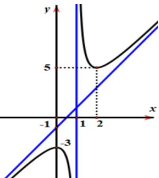
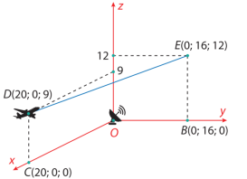
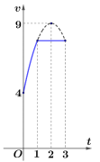
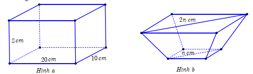
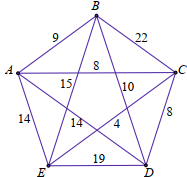
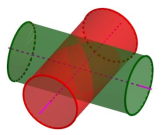

Để tìm giá trị lớn nhất trên đoạn \([a; b]\), tính đạo hàm \( f'(x) \), tìm nghiệm \( f'(x) = 0 \) trong \([a; b]\), và so sánh giá trị tại các điểm tới hạn và hai đầu mút.
Giá trị lớn nhất của hàm số \( f(x) = x^3 - 3x^2 - 9x + 10 \) trên đoạn \([-2; 2]\) bằng:
Chọn đáp án:
Lời giải:
Hàm số: \( f(x) = x^3 - 3x^2 - 9x + 10 \).
Đạo hàm: \( f'(x) = 3x^2 - 6x - 9 \).
\( f'(x) = 0 \Rightarrow 3x^2 - 6x - 9 = 0 \Rightarrow x = -1 \) (thuộc \([-2; 2]\)), \( x = 3 \) (không thuộc \([-2; 2]\)).
Tính giá trị:
\( f(-2) = 8 \), \( f(-1) = 15 \), \( f(2) = -12 \).
Giá trị lớn nhất: \( \max_{[-2; 2]} f(x) = f(-1) = 15 \).
Đáp án: C.
Phương trình tiệm cận xiên của hàm số \( y = f(x) \) có dạng \( y = kx + b \), với \( k = \lim_{x \to \infty} \frac{f(x)}{x} \), \( b = \lim_{x \to \infty} (f(x) - kx) \). Hoặc dùng đặc điểm đồ thị.
Cho hàm số \( y = f(x) \) có đồ thị như hình vẽ. Phương trình đường tiệm cận xiên của đồ thị hàm số là:
Chọn đáp án:
Lời giải:
Đồ thị có hai điểm cực trị: \( (0; -3) \), \( (2; 5) \).
Tâm đối xứng: \( I\left(1; \frac{-3 + 5}{2}\right) = I(1; 1) \).
Đường tiệm cận xiên đi qua \( I(1; 1) \) và \( K(0; -1) \).
Phương trình: \( y - 1 = \frac{1 - (-1)}{1 - 0}(x - 1) \Rightarrow y = 2x - 1 \).
Đáp án: A.
Vector pháp tuyến của mặt phẳng \( ax + by + cz + d = 0 \) là \( \vec{n} = (a; b; c) \).
Trong không gian \( Oxyz \), một vector pháp tuyến của mặt phẳng \( \frac{x}{-2} + \frac{y}{-1} + \frac{z}{3} = 1 \) là:
Chọn đáp án:
Lời giải:
Phương trình mặt phẳng: \( \frac{x}{-2} + \frac{y}{-1} + \frac{z}{3} = 1 \Rightarrow -\frac{1}{2}x - y + \frac{1}{3}z - 1 = 0 \Rightarrow 3x + 6y - 2z + 6 = 0 \).
Vector pháp tuyến: \( \vec{n} = (3; 6; -2) \).
Đáp án: A.
Phương trình đường thẳng qua điểm \( A(x_0; y_0; z_0) \), vector chỉ phương \( \vec{u} = (a; b; c) \): \( \begin{cases} x = x_0 + at \\ y = y_0 + bt \\ z = z_0 + ct \end{cases} \).
Trong không gian \( Oxyz \), cho hai điểm \( M(1; -1; -1) \) và \( N(5; 5; 1) \). Đường thẳng \( MN \) có phương trình là:
Chọn đáp án:
Lời giải:
Vector \( \vec{MN} = (5 - 1; 5 - (-1); 1 - (-1)) = (4; 6; 2) = 2(2; 3; 1) \).
Đường thẳng \( MN \) qua \( M(1; -1; -1) \), vector chỉ phương \( \vec{u} = (2; 3; 1) \).
Phương trình: \( \begin{cases} x = 1 + 2t \\ y = -1 + 3t \\ z = -1 + t \end{cases} \).
Đáp án: C.
Tứ phân vị thứ nhất \( Q_1 \) và thứ ba \( Q_3 \) của mẫu số liệu ghép nhóm được tính dựa trên tần số tích lũy và công thức nội suy.
Kết quả điều tra tổng thu nhập trong năm 2024 của một số hộ gia đình ở thành phố \( X \) được ghi lại ở bảng sau:
| Tổng thu nhập (triệu đồng) | \([200; 250)\) | \([250; 300)\) | \([300; 350)\) | \([350; 400)\) | \([400; 450)\) |
|---|---|---|---|---|---|
| Số hộ gia đình | 24 | 62 | 34 | 21 | 9 |
Một doanh nghiệp địa phương muốn hướng dịch vụ của mình đến các gia đình có mức thu nhập ở tầm trung, tức là 50% các hộ gia đình có mức thu nhập ở chính giữa so với mức thu nhập của tất cả các hộ gia đình của địa phương. Hỏi doanh nghiệp cần hướng đến các gia đình có mức thu nhập trong khoảng nào? (Kết quả làm tròn đến hàng đơn vị)
Chọn đáp án:
Lời giải:
Tổng số hộ: \( n = 24 + 62 + 34 + 21 + 9 = 150 \).
Tứ phân vị thứ nhất \( Q_1 \): Vị trí \( \frac{n}{4} = 37.5 \), thuộc khoảng \([250; 300)\).
\( Q_1 = 250 + \frac{\frac{150}{4} - 24}{62}(300 - 250) = \frac{16175}{62} \approx 260.89 \approx 261 \).
Tứ phân vị thứ ba \( Q_3 \): Vị trí \( \frac{3n}{4} = 112.5 \), thuộc khoảng \([300; 350)\).
\( Q_3 = 300 + \frac{\frac{3 \cdot 150}{4} - (24 + 62)}{34}(350 - 300) = \frac{11525}{34} \approx 338.97 \approx 339 \).
Khoảng thu nhập: \([Q_1; Q_3) \approx [261; 339)\).
Đáp án: A.
Nguyên hàm của \( \sin x + \cos x \) là \( -\cos x + \sin x + C \). Tìm \( C \) dựa trên điều kiện.
Tìm nguyên hàm \( F(x) \) của hàm số \( f(x) = \sin x + \cos x \) thỏa mãn \( F\left(\frac{\pi}{2}\right) = 2 \).
Chọn đáp án:
Lời giải:
\( F(x) = \int (\sin x + \cos x) \, dx = -\cos x + \sin x + C \).
Điều kiện: \( F\left(\frac{\pi}{2}\right) = -\cos \frac{\pi}{2} + \sin \frac{\pi}{2} + C = 1 + C = 2 \Rightarrow C = 1 \).
Vậy \( F(x) = -\cos x + \sin x + 1 \).
Đáp án: C.
Diện tích hình phẳng giới hạn bởi \( y = f(x) \), \( y = 0 \), \( x = a \), \( x = b \): \( S = \int_a^b f(x) \, dx \).
Gọi \( S \) là diện tích của hình phẳng giới hạn bởi các đường \( y = 5^x \), \( y = 0 \), \( x = 0 \), \( x = 2 \). Mệnh đề nào dưới đây đúng?
Chọn đáp án:
Lời giải:
Diện tích: \( S = \int_0^2 5^x \, dx \).
Đáp án: A.
Khoảng cách từ điểm \( A \) đến mặt phẳng \( (P) \): \( d(A; (P)) = \frac{1}{\sqrt{\frac{1}{h_1^2} + \frac{1}{h_2^2}}} \), với \( h_1, h_2 \) là khoảng cách từ \( A \) đến các cạnh liên quan.
Cho hình chóp \( S.ABCD \) có \( SA \perp (ABCD) \), đáy \( ABCD \) là hình chữ nhật. Biết \( AD = 2a \), \( SA = a \). Khoảng cách từ \( A \) đến \( (SCD) \) bằng:
Chọn đáp án:
Lời giải:
Gọi \( h = d(A; (SCD)) \). Tam giác \( ACD \) vuông tại \( D \).
\( \frac{1}{h^2} = \frac{1}{SA^2} + \frac{1}{AD^2} = \frac{1}{a^2} + \frac{1}{(2a)^2} = \frac{1}{a^2} + \frac{1}{4a^2} = \frac{5}{4a^2} \).
\( h = \frac{2a}{\sqrt{5}} \).
Đáp án: C.
Thể tích khối chóp: \( V = \frac{1}{3} \cdot S_{\text{đáy}} \cdot h \). Góc giữa mặt phẳng được tính qua vector pháp tuyến hoặc hình học.
Cho khối chóp \( S.ABCD \) có đáy là hình thoi, cạnh bên \( SA \) vuông góc với mặt phẳng đáy. Mặt bên \( (SCD) \) tạo với đáy góc \( 60^\circ \), \( \angle ABC = 60^\circ \), \( SA = 3\sqrt{3} \). Tính thể tích khối chóp \( S.ABCD \).
Chọn đáp án:
Lời giải:
Gọi \( I \) là trung điểm \( CD \). Vì \( ABCD \) là hình thoi, \( \angle ABC = 60^\circ \Rightarrow \angle ADC = 60^\circ \), tam giác \( ACD \) đều, \( AI \perp CD \).
Góc giữa \( (SCD) \) và \( (ABCD) \) là \( \angle SIA = 60^\circ \).
Trong tam giác vuông \( SAI \): \( \tan \angle SIA = \frac{SA}{AI} \Rightarrow AI = \frac{SA}{\tan 60^\circ} = \frac{3\sqrt{3}}{\sqrt{3}} = 3 \).
Tam giác \( ACD \) đều, \( AI = CD \cdot \frac{\sqrt{3}}{2} \Rightarrow CD = \frac{2AI}{\sqrt{3}} = 2\sqrt{3} \).
Diện tích \( \triangle ACD \): \( S_{\triangle ACD} = \frac{1}{2} \cdot AI \cdot CD = \frac{1}{2} \cdot 3 \cdot 2\sqrt{3} = 3\sqrt{3} \).
Diện tích đáy: \( S_{ABCD} = 2 \cdot S_{\triangle ACD} = 6\sqrt{3} \).
Thể tích: \( V = \frac{1}{3} \cdot SA \cdot S_{ABCD} = \frac{1}{3} \cdot 3\sqrt{3} \cdot 6\sqrt{3} = 18 \).
Đáp án: C.
Cấp số cộng: \( u_n = u_1 + (n-1)d \), với \( d \) là công sai.
Cho cấp số cộng \( (u_n) \) biết năm số hạng đầu là 2, 7, 12, 17, 22. Số hạng tổng quát của cấp số cộng là:
Chọn đáp án:
Lời giải:
Số hạng đầu: \( u_1 = 2 \).
Công sai: \( d = 7 - 2 = 5 \).
Số hạng tổng quát: \( u_n = u_1 + (n-1)d = 2 + (n-1) \cdot 5 = 5n - 3 \).
Đáp án: D.
Phương sai: \( S^2 = \frac{1}{n} \sum f_i x_i^2 - \bar{x}^2 \), với \( \bar{x} = \frac{\sum f_i x_i}{n} \), \( f_i \) là tần số, \( x_i \) là giá trị đại diện.
Bảng dưới đây thống kê cự li ném tạ trong quá trình luyện tập của một vận động viên:
| Cự li (m) | \([19; 19,5)\) | \([19,5; 20)\) | \([20; 20,5)\) | \([20,5; 21)\) | \([21; 21,5)\) |
|---|---|---|---|---|---|
| Tần số | 13 | 45 | 24 | 12 | 6 |
Hãy tính phương sai của mẫu số liệu ghép nhóm trên:
Chọn đáp án:
Lời giải:
Giá trị đại diện: \( 19.25, 19.75, 20.25, 20.75, 21.25 \).
Tổng tần số: \( n = 13 + 45 + 24 + 12 + 6 = 100 \).
Trung bình: \( \bar{x} = \frac{13 \cdot 19.25 + 45 \cdot 19.75 + 24 \cdot 20.25 + 12 \cdot 20.75 + 6 \cdot 21.25}{100} = 20.015 \).
Phương sai: \( S^2 = \frac{1}{100} \left[ 13 \cdot (19.25)^2 + 45 \cdot (19.75)^2 + 24 \cdot (20.25)^2 + 12 \cdot (20.75)^2 + 6 \cdot (21.25)^2 \right] - (20.015)^2 \approx 0.277 \).
Đáp án: A.
Bất phương trình \( \log_a f(x) > \log_a g(x) \) (với \( a > 1 \)) tương đương \( f(x) > g(x) \), kết hợp điều kiện xác định.
Giải bất phương trình \( \log_2 (3x - 2) > \log_2 (6 - 5x) \) được tập nghiệm là \( (a; b) \). Hãy tính tổng \( S = a + b \).
Chọn đáp án:
Lời giải:
Điều kiện: \( \begin{cases} 3x - 2 > 0 \\ 6 - 5x > 0 \end{cases} \Rightarrow \begin{cases} x > \frac{2}{3} \\ x < \frac{6}{5} \end{cases} \).
Bất phương trình: \( \log_2 (3x - 2) > \log_2 (6 - 5x) \Rightarrow 3x - 2 > 6 - 5x \Rightarrow 8x > 8 \Rightarrow x > 1 \).
Kết hợp: \( 1 < x < \frac{6}{5} \Rightarrow S = (1; \frac{6}{5}) \).
Tổng: \( S = 1 + \frac{6}{5} = \frac{11}{5} \).
Đáp án: B.
Đạo hàm của \( f(x) = x^2 e^x \): \( f'(x) = (x^2)' e^x + x^2 (e^x)' \). Hàm đồng biến khi \( f'(x) > 0 \).
Cho hàm số \( y = f(x) = x^2 e^x \). Xét các phát biểu sau:
Chọn đáp án cho từng phát biểu:
a)
b)
c)
d)
Lời giải:
a) \( f'(x) = (x^2)' e^x + x^2 (e^x)' = 2x e^x + x^2 e^x = (x^2 + 2x) e^x \). Đúng.
b) \( f'(x) = 0 \Rightarrow (x^2 + 2x) e^x = 0 \Rightarrow x(x + 2) = 0 \Rightarrow x = 0, x = -2 \neq 2 \). Sai.
c) Bảng biến thiên:
| \( x \) | \(-\infty\) | \(-2\) | 0 | \(+\infty\) |
|---|---|---|---|---|
| \( f'(x) \) | \(+\) | 0 | \(-\) | \(+\) |
Khoảng cách từ điểm \( A \) đến điểm \( B \): \( AB = \sqrt{(x_B - x_A)^2 + (y_B - y_A)^2 + (z_B - z_A)^2} \). Phương trình đường thẳng qua hai điểm.
Giả sử một máy bay thương mại \( M \) đang bay trên bầu trời theo một đường thẳng từ \( D \) đến \( E \) có hình chiếu trên mặt đất là đoạn \( CB \). Tại \( D \), máy bay cách mặt đất là 9000 m và tại \( E \) là 12000 m. Một radar được đặt trên mặt đất tại vị trí \( O \) cách \( C \) là 20000 m, cách \( B \) là 16000 m và \( \angle BOC = 90^\circ \). Xét hệ trục tọa độ \( Oxyz \) (đơn vị: 1000 m) với \( O \) là vị trí đặt radar, \( B \) thuộc tia \( Oy \), \( C \) thuộc tia \( Ox \), khi đó ta có tọa độ các điểm như hình vẽ:
Chọn đáp án cho từng phát biểu:
a)
b)
c)
d)
Lời giải:
a) \( \vec{OD} = (20; 0; 9) \), \( OD = \sqrt{20^2 + 9^2} = \sqrt{481} \approx 22 \, \text{km} = 22000 \, \text{m} \neq 29000 \, \text{m} \). Sai.
b) Tọa độ \( I \): \( \left( \frac{20 + 0}{2}; \frac{0 + 16}{2}; \frac{9 + 12}{2} \right) = \left(10; 8; \frac{21}{2}\right) \). Cách mặt đất: \( \frac{21}{2} \, \text{km} = 10500 \, \text{m} \). Đúng.
c) Đường thẳng \( DE \): \( \vec{DE} = (-20; 16; 3) \), qua \( D(20; 0; 9) \), phương trình: \( \begin{cases} x = 20 - 20t \\ y = 16t \\ z = 9 + 3t \end{cases} \).
Thay \( P(16; 3.2; 9.6) \): \( 16 = 20 - 20t \Rightarrow t = 0.2 \), \( 3.2 = 16t \Rightarrow t = 0.2 \), \( 9.6 = 9 + 3t \Rightarrow t = 0.2 \). \( P \in DE \). Đúng.
d) Hình chiếu \( H \): \( \vec{OH} \cdot \vec{DE} = 0 \Rightarrow t = \frac{373}{665} \). Khoảng cách: \( 2 \sqrt{20^2 - \frac{180736}{665}} = \frac{584 \sqrt{665}}{665} \approx 22600 \, \text{m} \neq 22000 \, \text{m} \). Sai.
Đáp án: a) Sai, b) Đúng, c) Đúng, d) Sai.
Xác suất có điều kiện: \( P(A|B) = \frac{P(A \cap B)}{P(B)} \). Công thức cộng xác suất: \( P(A \cup B) = P(A) + P(B) - P(A \cap B) \).
Trong một nhóm 50 học sinh, 36 học sinh làm việc trên máy tính bảng, 20 học sinh làm việc trên máy tính xách tay và 12 học sinh không làm việc trên cả hai thiết bị. Một học sinh được chọn ngẫu nhiên:
Chọn đáp án cho từng phát biểu:
a)
b)
c)
d)
Lời giải:
Gọi \( T \): làm việc trên máy tính bảng, \( L \): làm việc trên máy tính xách tay.
\( n(T) = 36 \), \( n(L) = 20 \), \( n(\bar{T} \cap \bar{L}) = 12 \).
a) \( P(T) = \frac{36}{50} = 0.72 \). Đúng.
b) \( n(T \cup L) = 50 - 12 = 38 \), \( n(T \cap L) = n(T) + n(L) - n(T \cup L) = 36 + 20 - 38 = 18 \).
\( P(T \cap L) = \frac{18}{50} = 0.36 \neq 0.12 \). Sai.
c) \( P(T|L) = \frac{n(T \cap L)}{n(L)} = \frac{18}{20} = 0.9 \). Đúng.
d) \( P(L|T) = \frac{n(T \cap L)}{n(T)} = \frac{18}{36} = 0.5 \), \( P(\bar{L}|T) = 1 - P(L|T) = 0.5 \). Đúng.
Đáp án: a) Đúng, b) Sai, c) Đúng, d) Đúng.
Quãng đường: \( s = \int_a^b v(t) \, dt \). Gia tốc: \( a(t) = v'(t) \).
Một vật chuyển động trong 3 giờ với vận tốc \( v \, (\text{km/h}) \) phụ thuộc vào thời gian \( t \, (\text{h}) \) có đồ thị của vận tốc như hình vẽ. Trong thời gian 1 giờ kể từ khi bắt đầu chuyển động, đồ thị đó là một phần của parabol có đỉnh \( S(2; 9) \) và trục đối xứng song song với trục tung, khoảng thời gian còn lại đồ thị là một đoạn thẳng song song với trục hoành.
Chọn đáp án cho từng phát biểu:
a)
b)
c)
d)
Lời giải:
a) Tại \( t = 0 \), \( v(0) = 4 \, \text{km/h} \). Đúng.
b) Giả sử \( v(t) = at^2 + bt + c \). Điều kiện: \( v(0) = c = 4 \), \( v(1) = a + b + c = \frac{31}{4} \), đỉnh tại \( t = -\frac{b}{2a} = 2 \), \( v(2) = 4a + 2b + c = 9 \).
Giải: \( a = -\frac{5}{4} \), \( b = 5 \), \( c = 4 \). Vậy \( v(t) = -\frac{5}{4}t^2 + 5t + 4 \neq -\frac{5}{4}t^2 - 5t + 4 \). Sai.
c) Gia tốc: \( a(t) = v'(t) = -\frac{5}{2}t + 5 \). Tại \( t = 0.5 \): \( a(0.5) = -\frac{5}{2} \cdot 0.5 + 5 = 3.75 \, \text{km/h}^2 \). Đúng.
d) Quãng đường: \( s = \int_0^1 \left( -\frac{5}{4}t^2 + 5t + 4 \right) \, dt + \int_1^3 \frac{31}{4} \, dt = \frac{259}{12} \approx 21.58 \, \text{km} \). Đúng.
Đáp án: a) Đúng, b) Sai, c) Đúng, d) Đúng.
Thể tích chóp cụt: \( V = \frac{1}{3}h (S_1 + S_2 + \sqrt{S_1 S_2}) \), với \( S_1, S_2 \) là diện tích hai đáy, \( h \) là chiều cao.
Một chiếc khay đựng đầy nước có dạng hình hộp chữ nhật với kích thước: chiều dài 20 cm, chiều rộng 10 cm, chiều cao 8 cm (hình a). Để san bớt nước cho đỡ đầy, người ta đổ nước từ chiếc khay thứ nhất đó sang chiếc khay thứ hai có dạng hình chóp cụt tứ giác đều với đáy khay là hình vuông nhỏ có đường chéo dài \( n \) cm, miệng khay là hình vuông lớn có đường chéo dài \( 2n \) cm (hình b). Sau khi đổ, mực nước ở khay thứ hai cao bằng \( \frac{2}{5} \) chiều cao của khay đó và lượng nước trong khay thứ nhất giảm đi \( \frac{1}{4} \) so với ban đầu. Thể tích của chiếc khay thứ hai theo đơn vị cm³ có kết quả chính xác đến hàng đơn vị là \( a \, \text{cm}^3 \). Tổng các chữ số của số \( a \) bằng bao nhiêu?
Nhập đáp án:
Lời giải:
Thể tích khay thứ nhất: \( 20 \cdot 10 \cdot 8 = 1600 \, \text{cm}^3 \).
Nước giảm \( \frac{1}{4} \Rightarrow \) nước đổ sang khay thứ hai: \( \frac{1}{4} \cdot 1600 = 400 \, \text{cm}^3 \).
Khay thứ hai: Chóp cụt tứ giác đều, đường chéo đáy nhỏ \( n \), đáy lớn \( 2n \), chiều cao \( h \). Mực nước cao \( \frac{2}{5}h \).
Tại mực nước, đường chéo hình vuông: \( M N = \frac{n}{5} + n + \frac{n}{5} = \frac{7n}{5} \).
Diện tích: \( S_1 = \frac{(2n)^2}{2} = 2n^2 \), \( S_2 = \frac{n^2}{2} \).
Thể tích nước: \( V = \frac{1}{3} \cdot \frac{2}{5}h \cdot \left( 2n^2 + \sqrt{2n^2 \cdot \frac{n^2}{2}} + \frac{n^2}{2} \right) = \frac{7}{15}n^2 h = 400 \).
Thể tích khay: \( V_{\text{khay}} = \frac{1}{3} h \cdot \left( 2n^2 + \sqrt{2n^2 \cdot \frac{n^2}{2}} + \frac{n^2}{2} \right) = \frac{7}{6} n^2 h = \frac{7}{6} \cdot \frac{400 \cdot 15}{7} \approx 1606 \, \text{cm}^3 \).
Tổng các chữ số của \( a = 1606 \): \( 1 + 6 + 0 + 6 = 13 \).
Đáp án: 13.
Tìm chu trình ngắn nhất qua tất cả các đỉnh (bài toán người giao hàng) bằng cách liệt kê các chu trình và tính tổng chiều dài.
Giả sử có năm địa điểm \( A, B, C, D, E \) được nối với nhau theo những con đường với độ dài (đơn vị: km) được mô tả trong hình sau:
Một người giao hàng cần đi giao hàng tại năm địa điểm trên. Người giao hàng xuất phát từ một địa điểm nào đó, đi qua các địa điểm còn lại để giao hàng và trở về địa điểm ban đầu. Hãy tìm một đường đi thỏa mãn điều kiện trên cho người giao hàng sao cho quãng đường mà người giao hàng phải đi chuyển là ngắn nhất.
Nhập đáp án:
Lời giải:
Liệt kê các chu trình:
| Đỉnh bắt đầu | Chu trình | Tổng chiều dài (km) |
|---|---|---|
| A | ACEBDA | 51 |
| B | BACEDB | 50 |
| C | CEABDC | 45 |
| D | DCEABD | 45 |
| E | ECABDE | 50 |
| E | ECDBAE | 45 |
Thể tích giao của hai hình trụ vuông góc được tính bằng tích phân diện tích mặt cắt.
Cho hai khối trụ có bán kính đáy bằng 3 và có trục là hai đường thẳng cắt nhau, vuông góc với nhau (hình vẽ). Gọi \( (H) \) là phần giao nhau của hai khối trụ đó. Tính thể tích của \( (H) \).
Nhập đáp án:
Lời giải:
Gọi \( (D) \) là phần giao của hai hình trụ trong một góc phần tư.
Mặt phẳng song song với \( Oyz \), cách \( Oyz \) khoảng \( x \) (\( 0 \leq x \leq 3 \)), cắt \( (D) \) theo hình vuông cạnh \( \sqrt{9 - x^2} \), diện tích \( S = 9 - x^2 \).
Thể tích \( (D) \): \( V_{(D)} = \int_0^3 (9 - x^2) \, dx = 18 \).
Thể tích \( (H) \): \( V_{(H)} = 8 \cdot V_{(D)} = 8 \cdot 18 = 144 \).
Đáp án: 144.
Hình chiếu vuông góc của điểm \( O \) lên đường thẳng \( AB \) là điểm \( H \) sao cho \( \vec{OH} \perp \vec{AB} \).
Trong không gian \( Oxyz \), đài kiểm soát không lưu sân bay có tọa độ \( O(0; 0; 0) \), đơn vị trên mỗi trục tính theo kilômét. Một máy bay chuyển động hướng về đài kiểm soát không lưu, bay qua hai vị trí \( A(-500; -250; 150) \), \( B(-200; -200; 100) \). Khi máy bay ở gần đài kiểm soát nhất, tọa độ của vị trí máy bay là \( (a; b; c) \). Giá trị của biểu thức \( -3a - b - c \) là bao nhiêu (làm tròn kết quả đến hàng đơn vị)?
Nhập đáp án:
Lời giải:
Vector \( \vec{AB} = (300; 50; -50) = 50(6; 1; -1) \), vector chỉ phương \( \vec{u} = (6; 1; -1) \).
Đường thẳng \( AB \): \( \frac{x + 500}{6} = \frac{y + 250}{1} = \frac{z - 150}{-1} \).
Hình chiếu \( H \): \( H(6t - 500; t - 250; -t + 150) \).
\( \vec{OH} \cdot \vec{u} = 0 \Rightarrow (6t - 500) \cdot 6 + (t - 250) + (-t + 150) = 0 \Rightarrow t = \frac{775}{9} \).
Tọa độ \( H \): \( \left( \frac{50}{3}; -\frac{1475}{9}; \frac{575}{9} \right) \).
Biểu thức: \( -3a - b - c = -3 \cdot \frac{50}{3} - \left(-\frac{1475}{9}\right) - \frac{575}{9} = 50 \).
Đáp án: 50.
Lợi nhuận: \( P(x) = R(x) - C(x) \), với \( R(x) \) là doanh thu, \( C(x) \) là chi phí. Tìm giá trị \( x \) tối ưu bằng cách xét \( P'(x) = 0 \) và kiểm tra điều kiện cực trị.
Nhà máy \( A \) chuyên sản xuất một loại sản phẩm cung cấp cho nhà máy \( B \). Hai nhà máy thỏa thuận rằng, hàng tháng nhà máy \( A \) cung cấp cho nhà máy \( B \) số lượng sản phẩm theo đơn đặt hàng của \( B \) (tối đa 100 tấn sản phẩm). Nếu số lượng đặt hàng là \( x \) tấn, thì giá bán mỗi tấn sản phẩm được xác định bởi công thức \( g(x) = 60 - 0.25x \) (triệu đồng/tấn). Chi phí sản xuất và vận chuyển hàng tháng của nhà máy \( A \) được xác định bởi công thức \( C(x) = 0.25x^2 + 10x + 100 \) (triệu đồng). Để lợi nhuận hàng tháng của nhà máy \( A \) đạt giá trị lớn nhất, nhà máy \( A \) cần cung cấp bao nhiêu tấn sản phẩm mỗi tháng? (Kết quả làm tròn đến hàng đơn vị).
Nhập đáp án:
Lời giải:
Doanh thu: \( R(x) = x \cdot g(x) = x (60 - 0.25x) = 60x - 0.25x^2 \).
Chi phí: \( C(x) = 0.25x^2 + 10x + 100 \).
Lợi nhuận: \( P(x) = R(x) - C(x) = (60x - 0.25x^2) - (0.25x^2 + 10x + 100) = -0.5x^2 + 50x - 100 \).
Đạo hàm: \( P'(x) = -x + 50 \).
\( P'(x) = 0 \Rightarrow x = 50 \).
Đạo hàm cấp hai: \( P''(x) = -1 < 0 \), nên \( x = 50 \) là điểm cực đại.
Kiểm tra ràng buộc: \( 0 \leq x \leq 100 \), \( x = 50 \) thỏa mãn.
Xác suất xảy ra biến cố \( A \) khi lấy ngẫu nhiên: \( P(A) = \frac{\text{số kết quả thuận lợi cho } A}{\text{tổng số kết quả có thể}} \). Với các bài toán lấy không hoàn lại, tổng số kết quả giảm sau mỗi lần lấy.
Một cuộc thi khoa học có 36 bộ câu hỏi, trong đó có 20 bộ câu hỏi về chủ đề tự nhiên và 16 bộ câu hỏi về chủ đề xã hội. Bạn An lấy ngẫu nhiên 1 bộ câu hỏi (lấy không hoàn lại), sau đó bạn Bình lấy ngẫu nhiên 1 bộ câu hỏi. Xác suất bạn Bình lấy được bộ câu hỏi về chủ đề xã hội bằng \( \frac{a}{b} \), trong đó \( a, b \) là các số nguyên dương, \( \gcd(a, b) = 1 \). Tổng \( a + b \) bằng bao nhiêu?
Nhập đáp án: